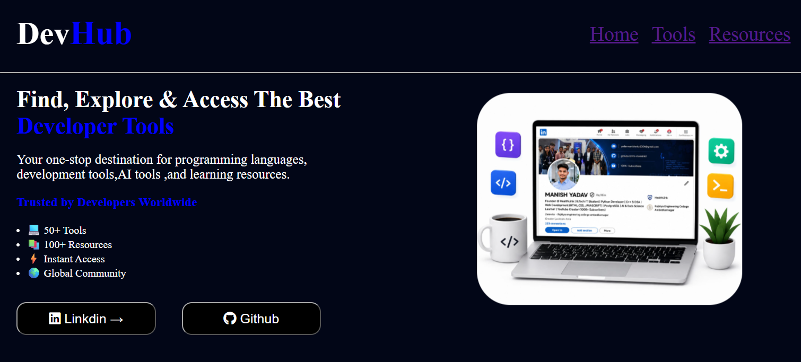

-->Build
HTML
CSS
JavaScript
A developer-focused resource website created to make popular developer tools, technologies and useful resources easier to discover from one place.

-->The project is available online. The detail page stays focused on the project itself rather than redirecting users to the Contact page.
Open Live Project ↗GitHub ↗